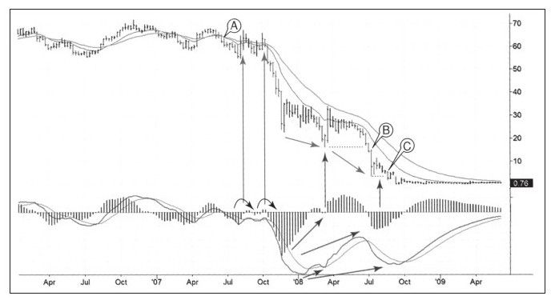

房地美（Freddie Mac,FRE）在债务未出事之前曾经是美国的标志，近期房地美的状况却不怎么好，公司前任董事会一定昏头了，现在股价跌到了仅剩几分钱。如果信用泡沫是在2007~2009年的熊市中集中爆发，房地美一定是灾难的中心。
图9-14反映了股价的下跌过程，从70美元之上跌到仅剩76美分的水平。我们再来看看其技术信号以考察我们从这次暴跌中学到了什么。
在A点处，快速EMA穿越慢速EMA，确认熊市来临。FRE此时的股价仍然在60美元之上，这个信号在整个下跌过程中都在起作用。这是本图案例中最重要的一课，那就是坚决不要在EMA周线图出现死叉的情况下持有多单，任何交易者遵守这条基本的规则都能躲过巨大的灾难。这些灾难在过去10年中经常被媒体大量报道，不仅是FRE，还包括安然和环球电讯等。
2007年，周线图MACD柱两次尝试反弹到零线之上，每次穿越零线后很快就跌下来，这加强了看跌信号，是熊市，做空并持有空单。图中MACD的这种情形由左侧两条长垂直箭头标注。

周线MACD底背离的情况很少出现，可能每隔几年才出现一次。巴斯克威尔猎犬信号[1]——一个典型的背离失败的信号更是少见。在同一张图中有两个这样猎犬信号接连出现几乎是闻所未闻，可这在FRE身上发生了。
右侧两条短垂直箭头标注了底背离。第一个底背离在2008年3月完成，但反弹了两周就结束了。在7月份的B点，FRE跌破3月份低点，使底背离失效，因为跌破前低产生了巴斯克威尔猎犬信号。价格从10美元跌到了4美元以下。24
第二个背离紧接着到来了，MACD柱和MACD线同时背离。同样，价格启动失败，在点C，价格跌破7月份低点3.89美元后跌到令人难以置信的46美分，此时房地美进入政府怀抱，政府拯救了这家公司。
两次巴克斯威尔猎犬信号背靠背出现极其少见，我从未见过这样的情形。这告诉我们永远不要说“不可能”。统计学家告诉我们股票市场呈“长尾”的概率分布，这是猜想的说法，如果要寻找看起来不大可能发生的事件，股票市场是个好场所。
我们从中学到的另一个道理是，永远不要说价格太低，股价从70美元跌到20美元的时候看起来很低吧，在5美元、3美元时看起来很低吧，但是如果在3美元买入，交易者仍然要承受85%的亏损。没有“太低”这回事，如果你看到牛市信号后在支撑位之上买入，在没有设定好止损之前就不能展开交易。
直到今天我对FRE仍然心存疑问，它的价格是不是太低，该买入吗？我的答案是，只要它还被联邦政府控制，我就拒绝再看这只股票。技术分析者研究的是市场大众的心理，如果由一小部分人掌控公司的命运，使用技术工具就很难弄清其中的真相。一旦公司被政府接管，技术分析也将不再有效。如果你有一位说客朋友并有一条可靠的内幕消息，它可能比你使用技术分析更有效，但要记得在两个信号之间要相互验证。
[1]这个信号在《以交易为生》中有所描述，当正常可靠的模式失败时，我把它叫做巴克斯威尔猎犬。如果你看到底背离后市场不涨反跌，表明基本面的情况已经发生重大变化，此时建议看空并做空。